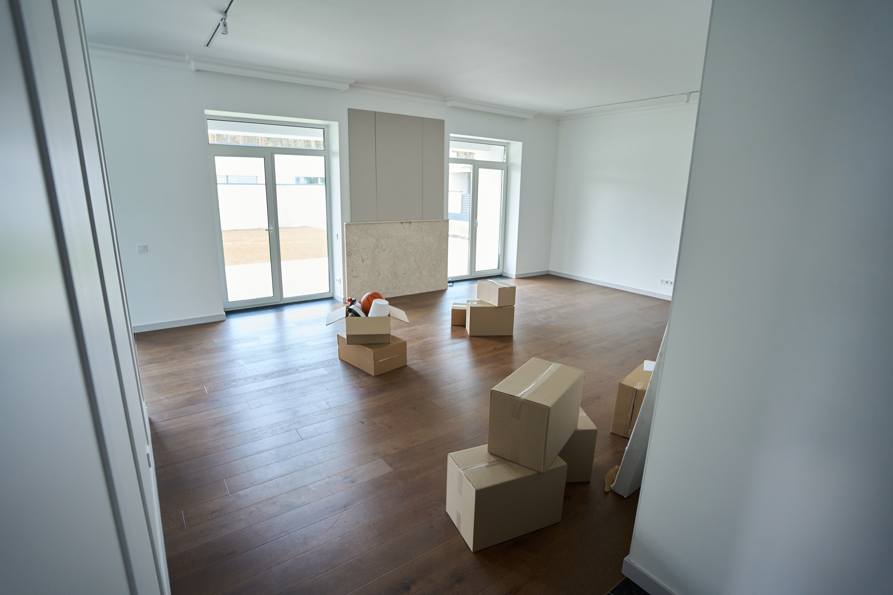

A thorough, top-to-bottom clean so your next chapter starts fresh.
Learn More →What We Offer
From move-in ready to daily upkeep — we handle every detail.
-

Move In / Move Out Cleaning
A thorough, top-to-bottom clean so your next chapter starts fresh.
Learn More → -

Apartment Turnover Cleaning
Fast, detailed turnovers that keep your units tenant-ready.
Learn More → -

-

Fast, detailed turnovers that keep your units tenant-ready.
Learn More →
A clean workspace done right — so your team can focus.
Learn More →
Before you unpack, we make sure every surface is spotless.
Learn More →See what sets every Lumina clean apart.
Explore the Standard →The Lumina Standard
What sets every clean apart.
Detail-Obsessed
Every corner. Every surface. We don't rush what matters.
Built on Trust
8 years of experience, built one satisfied client at a time.
Your Schedule
We work around your life — not the other way around.
Our Work
The Lumina Standard
Detail-Obsessed
Every corner. Every surface. We don't rush what matters.
Built on Trust
8 years of experience, built one satisfied client at a time.
Your Schedule
We work around your life — not the other way around.
Rooted in San Antonio
Serving 78208 and the neighborhoods around it — homes, apartments and offices, with a reputation built one referral at a time.
The Woman Behind the Standard
The Woman Behind the Standard
Aislinn.
"You can tell the difference between a space that was cleaned and one that was cared for. That's the standard I bring to every home."
Aislinn Venegas founded Lumina Cleaning Service after 8 years of hands-on experience. Originally from Chihuahua, Mexico, she built her reputation in San Antonio one home at a time — through referrals, trust, and work that speaks for itself.
Our Story
( Ready for a cleaner space? )
Move In/Out · Apartment · Office · New Home
Book a Cleaning →Serving San Antonio, TX